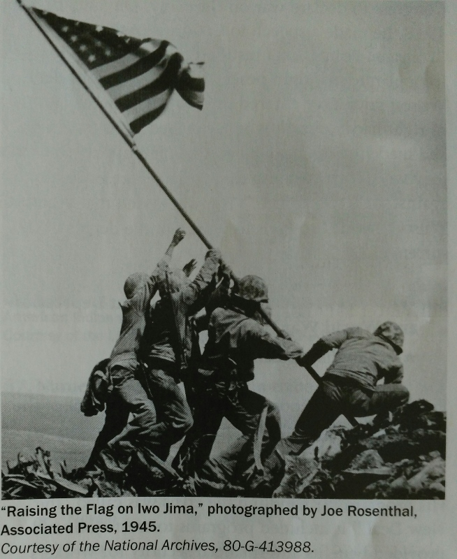

The United States fought five wars in the 1900s; World War I, World War II, the Korean War, the Vietnam War, and the (Persian) Gulf War.
World War I began in 1914. It was a long and bloody struggle. The United States entered the war in 1917 after German subamrines attacked British and U.S. ships, and the Germans contacted Mexico about starting a war against the United States. The war ended in 1918 when the Allied Powers ( led by Britain, France, Italy, and the United States) defeated the Central Powers (led by Germany, Austria-Hungary, officially ended the war in 1919. World War I was called "the war to end all wars."
World War II began in 1939 when Germany invaded Poland. France and Great Britain then declared war on Germany. Germany had alliances with Italy and Japan, and together they formed the Axis powers. The United States entered World War II in 1941, after the Japanese attacked Pearl Harbor, Hawaii. The United States joined France, Great Britain, an the Soviet Union as the Allied powers and led the 1944 invasion from German power was completed by May 1945. World War II did not end until Japan surrended in September 1945.
The Korean War began in 1950 when the North Korean Army moved across the 38th parallel into South Korea. The 38th parallel was a boundary separated the northern area of Korea, which was of Korea, which was allied with the United States. At the time, the United States was providing support to establish a democratic South Korean government. The United States provided military support to stop the advance of the North Korean Army. In the Korean communist governments. The fighting ended in 1953, with the establishment of the countries of North Korea and South Korea.
From 1959 to 1975, United States Armed Forces and the South Vietnamese Army fought against the North Vietnamese in the Vietnam War. The United States supported the democratic government in the south of the country to help it resist pressure from the communist north. The war ended in 1975 with the fall of Saigon, the capital of South Vietnam. In 1976, Vietnam was under total communist control. Almost 60 000 American men and women in the military died or were missing as a result of the Vietnam War.
On August 2, 1990, the Persian Gulf War began when Iraq invaded Kuwai. This invasion put the Iraqi Army closer to Saudi Arabia and its oil reserves, which supplied mucho of the world iwth oil. The United States and many other countries wanted to drive the Iraqi Army out of Kuwai and prevent it from invading other nearby countries. In January 1991, the United States led an international coalition of forces authorized by the United States into battle against the Iraqui Army. Within a month, the coalition declared a cease-fire on February 28, 1991.
Woodrow Wilson was the 28th president of the United States. President Wilson served two terms from 1913 to 1921. During his first term, he was able to keep the United States out of World War I. By 1917, Wilson knew this was no longer possible, and he asked Congress to declare war on Germany. On January 8, 1918, he made a speech to Congress outlining "Fourteen Points" that justified the war and called for a plan to maintain peace after the war. President Wilson said, "We entered this war because violations of right had occured which touched us to the quick and made the life of our own poeple impossible unless the were corrected and the world secure once for all against their recurrence. " The war ended that year and Wilson traveled to Paris to work out the details of the surrender by Germany.
Franklin Delano Roosevelt (FDR) was president of the United States from 1933 until 1945. He was elected during the Great Depression, which was a period of economic crisis after the stock market crash of 1929. His program for handling the crisis was called " the New Deal." It included programs to create jobs and provided benefits and financial security for workers across the country. Under his leadership, the Social Security Administration (SSA) was established in 1935. Roosevelt led the nation into World War II after Japan's attack on Pearl Harbor in December 1941. He gave the country a sense of hope and strength during a time of great struggle. Roosevelt was elected to office four times. He died in 1945, early in his fourth term as president. His wife, Eleanor Roosevelt, was a human rights leader throughout her lifetime.
The japanese bombed U.S. naval bases in a surprise attack on Pearl Harbor, Hawaii, on December 87, 1941. The next day, president Franklin D. Roosevelt, as commander in chief of the military, obtained an official declaration of war from Congress. Japan's partners in the Axis, Italy and Germany, then declared war on the United States. The Allies fought against the German Nazis, the Italian Fascists, and Japan's military empire. this was truly a world war, with battles fought in Europe, Africa, Asia, and the Pacific Ocean.
Before becoming the 34th president of the United States in 1953. Dwight D. Eisenhower served as a major general in World War II. As a commander of U.S. forces and supreme commander of the Allies in Europe, he led the succesful D-Day invasion of Normandy, France on June 6, 1944. In 1952, he retired from active service in the military . He was elected president of the United States later that year. As president, he established the interstate highway system and in 1953, the Department of Health,Education, and Welfare ( now known as Health and Human Services) was created. He oversaw the end of the Korean War. Eisenhower left the White House in 1961, after serving to term as president.
The main concern of the United States during the Cold War was the spread of communism. The Soviet Union (Union of Soviet Socialist Republics, or USSR) was a powerful nation that operated under the principles of communism. The United States and its allies believed that a democratic government and a capitalist economy were the best ways to preserve individual rights and freedoms. The United States and its allies feared the expansion of communism to countries outside the Soviet Union. The Cold War began shortly after the end of World War II and lasted for more than 40 years. It ended with the fall of the Berlin Wall in 1989, the reunification of East and West Germany in 1990, and the breakup of the USSR in 1991.
The modern civil rights movement in the United States began in 1954 when the Supreme Court ruled that racial segregation in public schools was unconstitutional. The goal of the civil rights movement was to end racial discrimination against African Americans and to gain full and equal rights for Americans of all races. Using nonviolent strategies such as bus boycotts, sit-ins, and marches, people came together to demand social change. As a result, Congress passed the Civil Rights Act of 1964 and the Voting Rights Act of 1965. The Civil Rights Act made segregation in public facilities and racial discrimination in employment and education illegal. The law protects African Americans, women, and others from discrimination. The Voting Rights Act banned literacy tests and other special requirements that had been used to stop African Americans from registering to vote.
Martin Luther King, Jr. was a Baptist minister and civil rights leader. He worked hard to make America a more fair, tolerant, and equal nation. He was the main leader of the civil rights movement of the 1950s and 1960s. Because of this movement, civil rights laws were passed to protect voting rights and end racial segregation. King believed in the ideals of the Declaration of Independence—that every citizen deserves America’s promise of equality and justice. In 1963, King delivered his famous “I Have a Dream” speech, which imagines an America in which people of all races exist together equally. He was only 35 years old when he received the Nobel Peace Prize in 1964 for his civil rights work. King was killed on April 4, 1968.
On September 11, 2001, four airplanes flying out of U.S. airports were taken over by terrorists from the Al-Qaeda network of Islamic extremists. Two of the planes crashed into the World Trade Center’s Twin Towers in New York City, destroying both buildings. One of the planes crashed into the Pentagon in Arlington, Virginia. The fourth plane, originally aimed at Washington, D.C., crashed in a field in Pennsylvania. Almost 3,000 people died in these attacks, most of them civilians. This was the worst attack on American soil in the history of the nation.

American Indians lived in North America for thousands of years before the European settlers arrived. Today there are more than 500 federally recognized tribes in the United States. Each tribe has its own social and political system. American Indian cultures are different from one tribe to another, with different languages, beliefs, stories, music, and foods. Earlier in their history, some tribes settled in villages and farmed the land for food. Other tribes moved frequently as they hunted and gathered food and resources. The federal government signed treaties with American Indian tribes to move the tribes to reservations. These reservations are recognized as domestic, dependent nations.